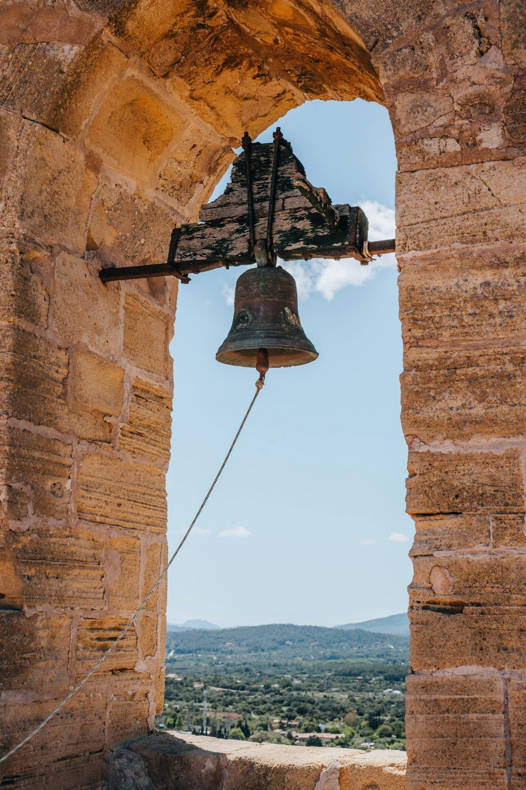

All Saints, Wyncott Cross
5 bells · tenor 7 cwt 1 qr 20 lb in B♭ · practice Thursday 19:00 – 20:30 · 5.1 miles from Harnscombe
Bells
| Bell | Note | cwt–qr–lb | Weight | Of tenor |
|---|---|---|---|---|
| 1 treble | F | 3–3–16 | 198 kg | 52 % |
| 2 | E♭ | 4–2–20 | 238 kg | 63 % |
| 3 | D | 5–0–15 | 261 kg | 69 % |
| 4 | C | 6–0–20 | 314 kg | 83 % |
| 5 tenor | B♭ | 7–1–20 | 377 kg | 100 % |
Four bells 1752–1810, treble added 1953. Weights below the tenor are estimates scaled by pitch.

Practice
- Practice
- Thursday 19:00 – 20:30
- Sunday
- 10:00 – 10:25, second and fourth Sundays
- Floor
- First floor · 58 steps
- Distance
- 5.1 miles from Harnscombe
- Parking
- Lay-by opposite the church, room for four cars
Access
- 58 steps, the last 9 on a fixed wooden ladder
- Low doorway at the top of the stair: 1.62 m
- No toilet in the church; nearest at the Cross Inn car park
Rung here
- Plain Hunt on 510 changes · about 0 min
- Plain Bob Doubles40 changes · about 1 min